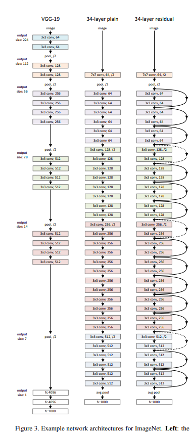
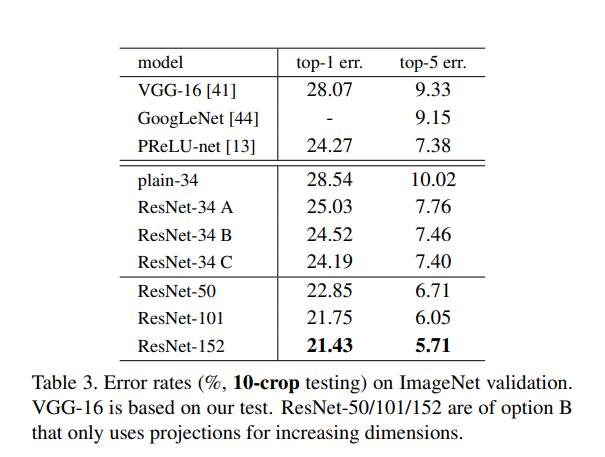
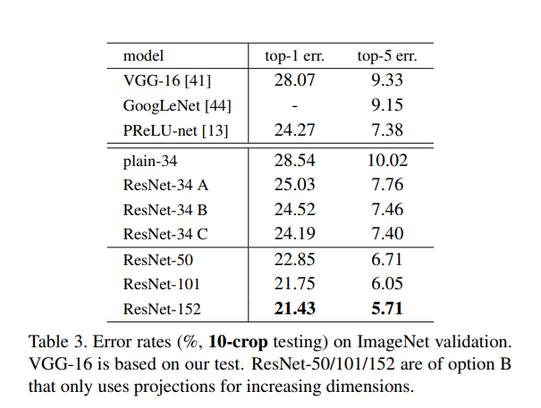
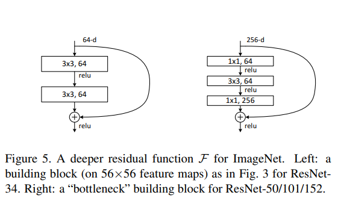

depth is important for image classification and leading results uses very deep architectures on ImageNet dataset
Question - is learning better networks as easy as stacking more layers?
SKIPPING FOR NOW

H(x) -- underlying mapping to be fit by stacked layers, x is input to the first of the layers
if multiple nonlinear layers can asymptotically approximate complicated functions, then these layers can also approximate the residual functions: H(x) - x

Plain network - -inspired by VGG -- 2 design rules -- a) for same output size, layers have same number of filter b) if output size is halved, number of filters is doubled. Downsampling is performed by CNN with stride=2. Final CNN layer output is averaged pool into a 1000 way fully connected layer with softmax. Total weighted layers -- 34.
ResNet has fewer filters and lower complexity than that of VGGNet.
Implementation:
Training
Testing
 


Needed faster training, so redesigned residual function as a bottleneck design.
each residual function F is a stack of 3 layers -- 1x1, 3x3 and 1x1 convolutions
ResNet30 - 2 Layer F + 3 Layer bottleneck F = ResNet50

ResNets have lower layer responses -- supports the hypothesis that residual functions might be generally closer to zero than non residual functions. Deeper ResNets have smaller magnitudes of responses. When there are more layers, individual layer of ResNets tends to modify the signal less.